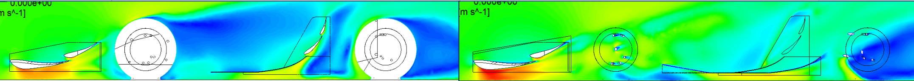
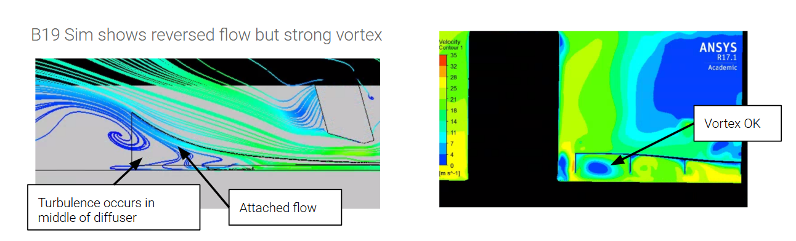
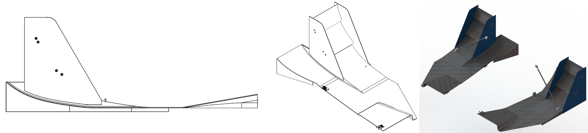
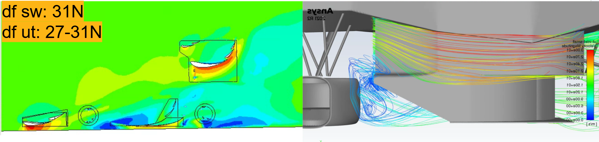
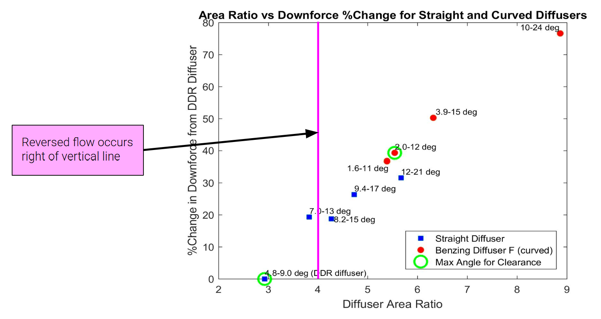

I set up and ran CFD simulations to investigate the undertray diffuser and side wing geometry inherited from B23. The base diffuser and side wing were developed by previous team members; my work focused on iterating on flow behavior within this existing platform, primarily looking at diffuser outlet curvature and inlet-to-outlet area ratios as well as optimizing downforce contribution within packaging constraints.

The B20/B23 diffuser uses a curved Benzing D profile, a departure from the flat diffusers used on B19. Curved diffusers were avoided in those years due to their more complex flow characteristics, but based on Ground Effect Aerodynamics of Race Cars , these complex flow features such as vortex formation and separated flow regions are expected and even necessary for an optimal diffuser, provided the flow remains attached and vortices stay stable rather than breaking down asymmetrically.

B23's simulations showed flow reversal occurring in the center of the diffuser where clean separation with stable wortices was expected instead showing vortex reversal and symmetry breakdown across the diffuser centerline.
The B23 side undertray sections use a Benzing D diffuser profile on the inboard side, paired with an outboard profile incorporating a side wing array that functions similarly to a diffuser pump, accelerating flow to support the main diffuser's pressure recovery. This base design was developed by previous team members and provided the baseline geometry for the outlet curvature and area ratio investigation.

The undertray inlet uses a diverging cross-section, increasing from 0.7× to 1× the radiator frontal area to smoothly accelerate and condition flow before it reaches the radiator. The inlet is also asymmetric in shape, routing air parallel to the radiator's 30° mounting angle to minimize losses at entry.
The low-profile undertray maximizes air intake through the inlet while the Benzing diffuser profile reduces wake without compromising downforce. Multi-element side wings sit above the diffuser to add rear downforce while maintaining the car's overall center of pressure balance. The inlet area, set relative to the radiator frontal area, was one of the reference points used when evaluating outlet area ratios during my investigation.

From the inboard velocity contour and streamlines, the flow entering the diffuser throat looked like it is already non-uniform. I hypothesized this could be from wheel wake and upstream undertray surface and could have been causing early separation regardless of outlet geometry. However, upon checking the velocity profiles directly at the diffuser throat, the profile looked clean and uniform, informing my decision to look at the diffuser outlet curvature and area ratio.
To address the center-channel flow reversal, I focused on two parameters: the curvature of the diffuser outlet ramp and the inlet-to-outlet area ratio of the diffuser channel. The hypothesis was that the existing outlet curvature and expansion ratio were too aggressive for the flow to remain attached through the center of the diffuser, causing it to separate early and reverse rather than exit cleanly.
I ran a series of CFD cases varying outlet curvature and area ratio to observe their effect on the centerline flow pattern, looking for a configuration that would produce favorable flow regime where flow separates cleanly at the outlet with stable vortices, rather than the reversed flow seen in B23.
I flattened the outlet divergence angle while preserving the same overall area ratio, spreading the expansion over more of the diffuser's length, letting the pressure gradient build more gradually and form a stable recirculation bubble.
With the diffuser length fixed by packaging, I tested various exit-to-throat area ratios from roughly 3 to 9, across both straight diffuser profiles and the curved Benzing F profile, to locate the transition between reversed and stable separated flow. Across this sweep, downforce gain relative to the baseline diffuser increased substantially with area ratio, up to roughly 75% at the highest ratios tested (8.9, ~10–24°), but reversed flow began to occur at area ratios above approximately 4, which is where B23's diffuser sat.
The packaging-constrained configurations (limited by ground clearance and chassis geometry) clustered around area ratios of 4.8–9.0° and 2.0–12°, both near or just past this reversal threshold. This meant the highest-downforce options achievable within the current packaging were also the ones most likely to tip into the unstable, reversed-flow regime that was ultimately observed.

I recommended the following potential investigations:
Dividing the diffuser into multiple narrower channels using center strakes (in addition to the existing outboard strakes) would reduce the effective width-to-length expansion ratio each channel experiences. This can stabilize the center vortex structure by limiting the vertical availablility for symmetry breakdown.
The undertray ride height curve is sensitive to the ride-height-to-diffuser-length ratio (h/d), and B23 ride height changes could push the diffuser in and out of the reversed-flow regime. Simulating at multiple ride heights, rather than a single static height, would clarify whether this is a static geometry issue or a dynamic sensitivity issue that changes throughout a lap.
Computational Fluid Dynamics (Ansys Fluent) • Flow diagnosis and root cause investigation • Aerodynamic design iteration • Ground effect aerodynamics • Center of pressure balance analysis
Email: jennifersili@berkeley.edu
LinkedIn: linkedin.com/in/jennifersili